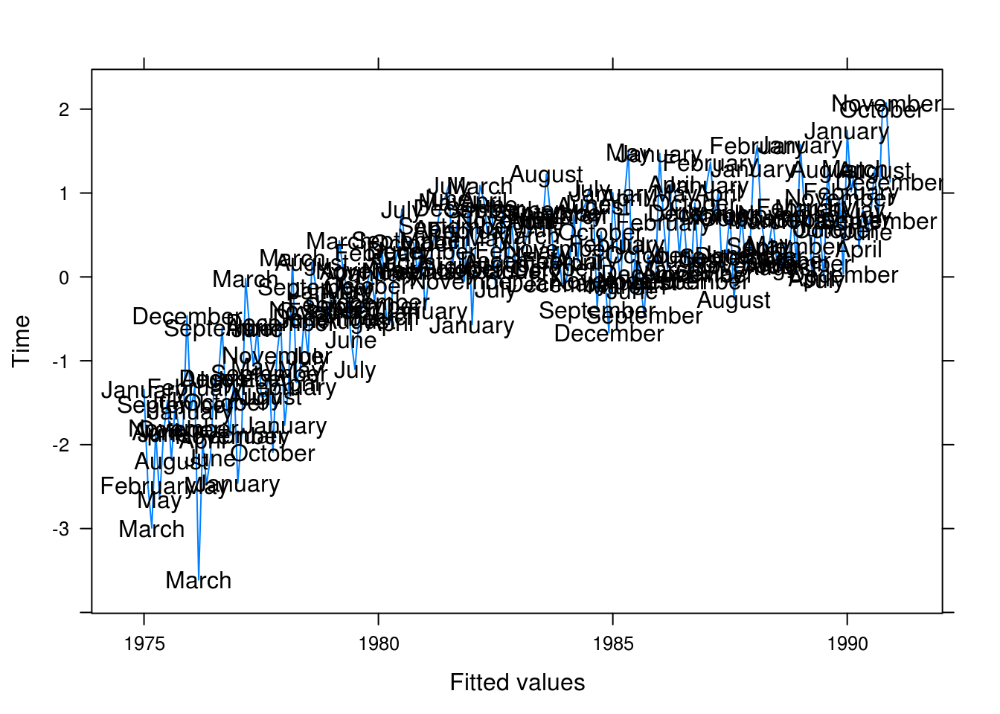

Chapter 3 Trends
3.1 Least squares estimation for linear regression trend
We begin by taking the partial derivatives with respect to \(\beta_0\).
\[ \frac{\partial}{\partial{\beta_0}} \mathcal{Q}(\beta_0, \beta_1) = -2\sum_{t=1}^n (Y_t - \beta_0 - \beta_1 t) \]
We set it to \(0\) and from this retrieve
\begin{align*} -2\sum_{t=1}^n (Y_t - \beta_0 - \beta_1 t) = & 0 \implies \\ \sum_{t=1}^n Y_t - n\beta_0 - \beta_1 \sum_{t=1}^n t = & 0 \implies \\ \beta_0 = \frac{\sum_{t=1}^n Y_t - \beta_1 \sum_{t=1}^n t}{n} = & \bar{Y} - \beta_1 \bar{t} \end{align*}Next, we take the partial derivative with respect to \(\beta_1\);
\[ \frac{\partial}{\partial{\beta_1}} \mathcal{Q}(\beta_0, \beta_1) = -2\sum_{t=1}^n t(Y_t - \beta_0 - \beta_1 t) \]
Setting this to \(0\) as well, multiplying both sides with \(-1/2\) and rearranging results in
\begin{align*} -2\sum_{t=1}^n t (Y_t - \beta_0 - \beta_1 t) = & 0 \implies \\ \beta_1 \sum_{t=1}^n t^2 = & \sum_{t=1}^n Y_t t - \beta_0 \sum_{t=1}^n t \end{align*}Then, substituting with the result gained previously for \(\beta_0\), we get
\begin{align*} \beta_1 \sum_{t=1}^n t^2 = & \sum_{t=1}^n Y_t t - \left( \frac{\sum_{t=1}^n Y_t}{n} - \beta_1 \frac{\sum_{t=1}^n}{n} \right) \sum_{t=1}^n t \iff \\ \beta_1 \left( \sum_{t=1}^n t^2 - \frac{(\sum_{t=1}^n t)^2}{n} \right) = & \sum_{t=1}^n Y_t t - \frac{\sum_{t=1}^n Y_t \sum_{t=1}^n t}{n} \iff \\ \beta_1 = & \frac{n\sum_{t=1}^n Y_tt - \sum_{t=1}^nY_t \sum_{t=1}^n t}{n \sum_{t=1}^n t^2 - \left( \sum_{t=1}^n t \right)^2} = \frac{\sum_{t=1}^n (Y_t - \bar{Y})(t-\bar{t})}{\sum_{t=1}^n (t-\bar{t})^2} \quad \square \end{align*}3.2 Variance of mean estimator
\[ \bar{Y} = \frac{1}{n}\sum_{t=1}^n Y_t = \frac{1}{n} \sum_{t=1}^n(\mu + e_t - e_{t-1}) = \mu + \frac{1}{n} \sum_{t=1}^n (e_t - e_{t-1}) = \mu + \frac{1}{n}(e_n - e_0) \]
\[ \text{Var}[\bar{Y}] = \text{Var}[\mu + \frac{1}{n}(e_n - e_0)] = \frac{1}{n^2}(\sigma_e^2 + \sigma_e^2) = \frac{2\sigma_e^2}{n^2} \]
It is uncommon for the sample size to have such a large impact on the variance estimator for the sample mean.
Setting \(Y_t = \mu + e_t\) instead gives
\[ \bar{Y} = \frac{1}{n}\sum_{t=1}^n Y_t = \frac{1}{n} \sum_{t=1}^n(\mu + e_t) = \mu + \frac{1}{n} \sum_{t=1}^n e_t \]
\[ \text{Var}[\bar{Y}] = \text{Var} \left[ \mu + \frac{1}{n} \sum_{t=1}^n e_t \right] = 0 + \frac{1}{n^2} \times n \sigma_e^2 = \frac{\sigma_e^2}{n}. \]
3.3 Variance of mean estimator #2
\[ \bar{Y} = \frac{1}{n} \sum_{t=1}^n(\mu + e_t + e_{t-1}) = \mu + \frac{1}{n} \sum_{t=1}^n (e_t + e_{t-1}) = \mu + \frac{1}{n} \left( e_n + e_0 + 2 \sum_{t=1}^{n-1} t \right) \]
\[ \text{Var}[\bar{Y}] = \frac{1}{n^2}(\sigma_e^2 + \sigma_e^2 + 4(n-1) \sigma_e^2 ) = \frac{1}{n^2}2(2n-1)\sigma_e^2 \]
Setting \(Y_t = \mu + e_t\) instead gives the result from 3.2. We note that for large \(n\) the variance if approximately four times larger with \(Y_t = \mu + e_t + e_{t-1}\).
3.4 Hours
a
library(TSA)
data("hours")
xyplot(hours)Figure 3.1: Monthly values of the average hours worked per week in the U.S. manufacturing sector.
In Figure 1 we see a steep incline between 83 and 84. There also appears to be a seasonal trend with generally longer work hours later in the year apart from the summer; 1984, however, does not exhibit as clear a pattern.
b
months <- c("J", "A", "S", "O", "N", "D", "J", "F", "M", "A", "M", "J")
xyplot(hours, panel = function(x, y, ...) {
panel.xyplot(x, y, ...)
panel.text(x = x, y = y, labels = months)
})Figure 3.2: Monthly values of average hours worked per week with superposed initials of months.
Here, in Figure 2, our interpretation is largely the same. It is clear that December stands out as the month with the longest weekly work hours whilst February and January are low-points, demonstrating a clear trend.
3.5 Wages
a
data("wages")
xyplot(wages, panel = function(x, y, ...) {
panel.xyplot(x, y, ...)
panel.text(x, y, labels = months)
})Figure 3.3: Monthly average hourly wages for workers in the U.S. apparel and textile industry.
There is a positive trend with seasonality: August is a low-point for wages. Generally, there seems to be larger increases in the fall.
b
wages_fit1 <- lm(wages ~ time(wages))
summary(wages_fit1)##
## Call:
## lm(formula = wages ~ time(wages))
##
## Residuals:
## Min 1Q Median 3Q Max
## -0.23828 -0.04981 0.01942 0.05845 0.13136
##
## Coefficients:
## Estimate Std. Error t value Pr(>|t|)
## (Intercept) -5.490e+02 1.115e+01 -49.24 <2e-16 ***
## time(wages) 2.811e-01 5.618e-03 50.03 <2e-16 ***
## ---
## Signif. codes: 0 '***' 0.001 '**' 0.01 '*' 0.05 '.' 0.1 ' ' 1
##
## Residual standard error: 0.08257 on 70 degrees of freedom
## Multiple R-squared: 0.9728, Adjusted R-squared: 0.9724
## F-statistic: 2503 on 1 and 70 DF, p-value: < 2.2e-16wages_rst <- rstudent(wages_fit1)c
xyplot(wages_rst ~ time(wages_rst), type = "l",
xlab = "Time", ylab = "Studentized residuals")(#fig:wages_resid)Residual plot
We still seem to have autocorrelation related to the time and not white noise.
d
wages_fit2 <- lm(wages ~ time(wages) + I(time(wages)^2))
summary(wages_fit2)##
## Call:
## lm(formula = wages ~ time(wages) + I(time(wages)^2))
##
## Residuals:
## Min 1Q Median 3Q Max
## -0.148318 -0.041440 0.001563 0.050089 0.139839
##
## Coefficients:
## Estimate Std. Error t value Pr(>|t|)
## (Intercept) -8.495e+04 1.019e+04 -8.336 4.87e-12 ***
## time(wages) 8.534e+01 1.027e+01 8.309 5.44e-12 ***
## I(time(wages)^2) -2.143e-02 2.588e-03 -8.282 6.10e-12 ***
## ---
## Signif. codes: 0 '***' 0.001 '**' 0.01 '*' 0.05 '.' 0.1 ' ' 1
##
## Residual standard error: 0.05889 on 69 degrees of freedom
## Multiple R-squared: 0.9864, Adjusted R-squared: 0.986
## F-statistic: 2494 on 2 and 69 DF, p-value: < 2.2e-16wages_rst2 <- rstudent(wages_fit2)e
xyplot(wages_rst2 ~ time(wages_rst), type = "l",
xlab = "Time", ylab = "Studentized residuals")(#fig:wages_quad_resid)Residual plot for our quadratic model.
This looks more like random noise but there is still clear autocorrelation between the fitted residuals that we have yet to capture in our model.
3.6 Beer sales
a
data(beersales)
xyplot(beersales)Figure 3.4: Monthly U.S. beer sales.
Clear seasonal trends. There is an initial positive trend from 1975 to around 1981 that then levels out.
b
months <- c("J", "F", "M", "A", "M", "J", "J", "A", "S", "O", "N", "D")
xyplot(beersales,
panel = function(x, y, ...) {
panel.xyplot(x, y, ...)
panel.text(x, y, labels = months)
})Figure 3.5: Monthly U.S. beer sales annotated with the months’ initials.
It is now evident that the peaks are in the warm months and the slump in the winter and fall months. December is a particular low point, while May, June, and July seem to be the high points.
c
beer_fit1 <- lm(beersales ~ season(beersales))
summary(beer_fit1)##
## Call:
## lm(formula = beersales ~ season(beersales))
##
## Residuals:
## Min 1Q Median 3Q Max
## -3.5745 -0.4772 0.1759 0.7312 2.1023
##
## Coefficients:
## Estimate Std. Error t value Pr(>|t|)
## (Intercept) 12.48568 0.26392 47.309 < 2e-16 ***
## season(beersales)February -0.14259 0.37324 -0.382 0.702879
## season(beersales)March 2.08219 0.37324 5.579 8.77e-08 ***
## season(beersales)April 2.39760 0.37324 6.424 1.15e-09 ***
## season(beersales)May 3.59896 0.37324 9.643 < 2e-16 ***
## season(beersales)June 3.84976 0.37324 10.314 < 2e-16 ***
## season(beersales)July 3.76866 0.37324 10.097 < 2e-16 ***
## season(beersales)August 3.60877 0.37324 9.669 < 2e-16 ***
## season(beersales)September 1.57282 0.37324 4.214 3.96e-05 ***
## season(beersales)October 1.25444 0.37324 3.361 0.000948 ***
## season(beersales)November -0.04797 0.37324 -0.129 0.897881
## season(beersales)December -0.42309 0.37324 -1.134 0.258487
## ---
## Signif. codes: 0 '***' 0.001 '**' 0.01 '*' 0.05 '.' 0.1 ' ' 1
##
## Residual standard error: 1.056 on 180 degrees of freedom
## Multiple R-squared: 0.7103, Adjusted R-squared: 0.6926
## F-statistic: 40.12 on 11 and 180 DF, p-value: < 2.2e-16All comparisons are made against january. The model helpfully explains approximately 0.71 of the variance and is statistically significant. Most of the factors are significant (mostly the winter months as expected).
d
xyplot(rstudent(beer_fit1) ~ time(beersales), type = "l",
xlab = "Fitted values", ylab = "Time",
panel = function(x, y, ...) {
panel.xyplot(x, y, ...)
panel.text(x, y, labels = season(beersales))
})